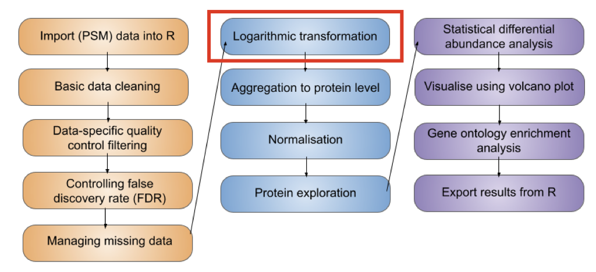
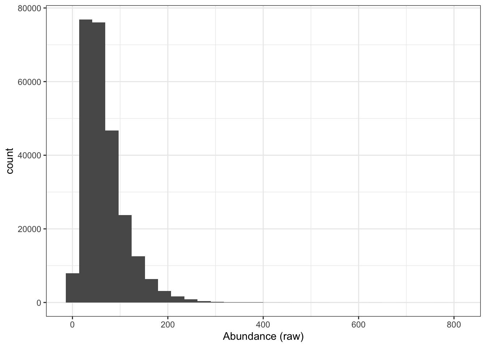
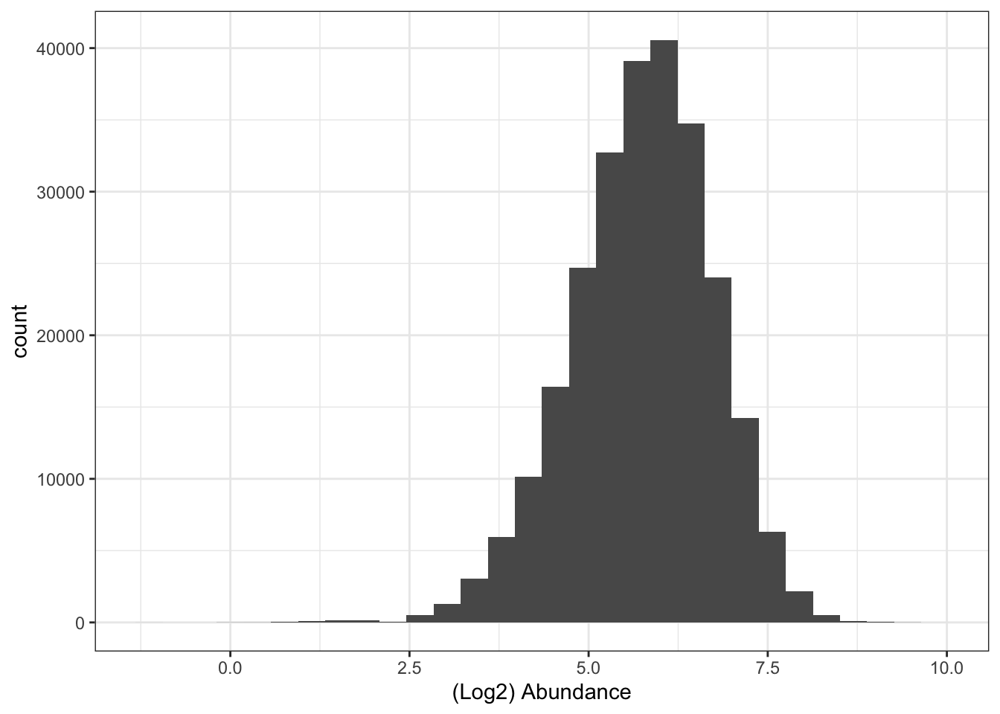
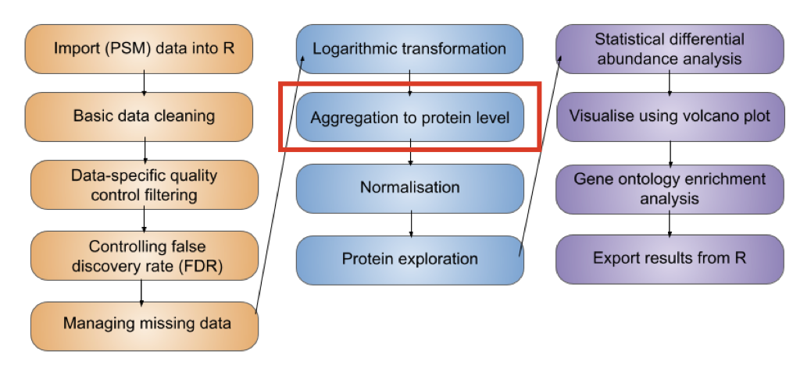
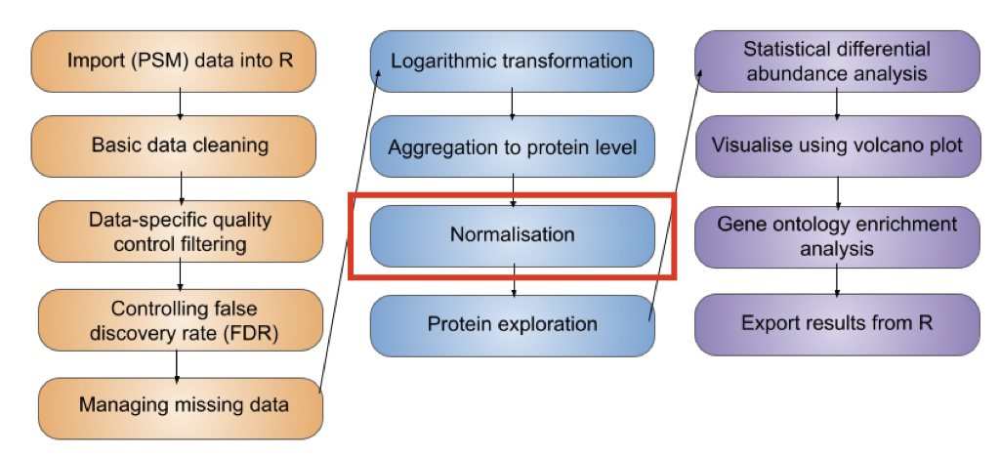
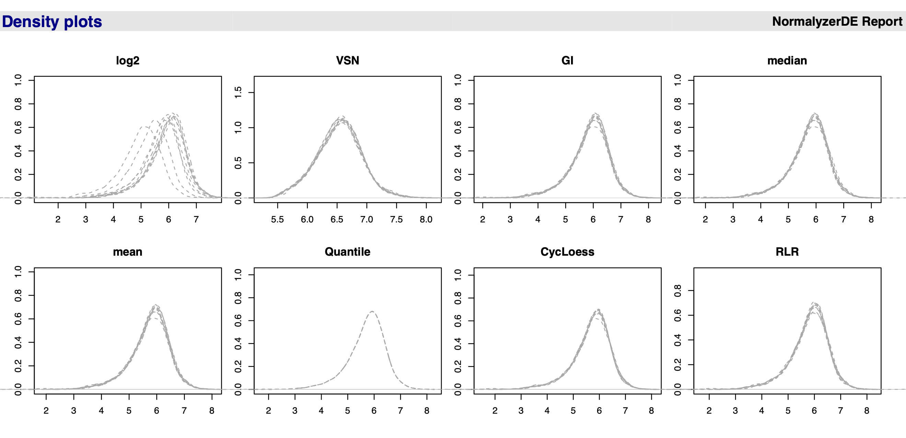

4 Data normalisation and data aggregation
Learning Objectives
- Be able to aggregate peptide-level information to protein-level using the
aggregateFeaturesfunction in theQFeaturesinfrastructure - Recognise the importance of log transformation (
logTransform) - Know how to normalise your data (using
normalize) and explore the most appropriate methods for expression proteomics data
Let’s start by recapping which stage we have reached in the processing of our quantitative proteomics data. In the previous two lessons we have so far learnt,
- how to import our data into R and store it in a
QFeaturesobject - work with the structure of
QFeaturesobjects - clean data using a series of non-specific and data-dependent filters
In this next lesson we will continue processing the PSM level data, explore log transformation, normalisation and then aggregate our data to protein-level intensities.
4.1 Logarithmic transformation
Let’s recap our data,
cc_qfAn instance of class QFeatures containing 3 assays:
[1] psms_raw: SummarizedExperiment with 45803 rows and 10 columns
[2] psms_filtered: SummarizedExperiment with 25698 rows and 10 columns
[3] psms_imputed: SummarizedExperiment with 25698 rows and 10 columns Now that we are satisfied with our PSM quality, we need to log2 transform the quantitative data. If we take a look at our current (raw) quantitative data we will see that our abundance values are dramatically skewed towards zero.
## Look at distribution of abundance values in untransformed data
cc_qf[["psms_imputed"]] %>%
assay() %>%
longFormat() %>%
ggplot(aes(x = value)) +
geom_histogram() +
theme_bw() +
xlab("Abundance (raw)")
This is to be expected since the majority of proteins exist at low abundances within the cell and only a few proteins are highly abundant. However, if we leave the quantitative data in a non-Gaussian distribution then we will not be able to apply parametric statistical tests later on. Consider the case where we have a protein with abundance values across three samples A, B and C. If the abundance values were 0.1, 1 and 10, we can tell from just looking at the numbers that the protein is 10-fold more abundant in sample B compared to sample A, and 10-fold more abundant in sample C than sample B. However, even though the fold- changes are equal, the abundance values in A and B are much closer together on a linear scale than those of B and C. A parametric test would not account for this bias and would not consider A and B to be as equally different as B and C. By applying a logarithmic transformation we can convert our skewed asymmetrical data distribution into a symmetrical, Gaussian distribution.
Why use base-2?
Although there is no mathematical reason for applying a log2 transformation rather than using a higher base such as log10, the log2 scale provides an easy visualisation tool. Any protein that halves in abundance between conditions will have a 0.5 fold change, which translates into a log2 fold change of -1. Any protein that doubles in abundance will have a fold change of 2 and a log2 fold change of +1.
At which stage of the processing should I perform log transformation?
Logarithmic transformation can be applied at any stage of the data processing. We have chosen to log transform the data in this example prior to protein aggregation as we will use the robust method for summarisation and this method requires the data to be log transformed.
## Look at distribution of abundance values in untransformed data
cc_qf[["psms_imputed"]] %>%
assay() %>%
longFormat() %>%
ggplot(aes(x = log2(value))) +
geom_histogram() +
theme_bw() +
xlab("(Log2) Abundance")
To apply this log2 transformation to our data we use the logTransform function and specify base = 2.
cc_qf <- logTransform(object = cc_qf,
base = 2,
i = "psms_imputed",
name = "log_psms_imputed")Let’s take a look again at our QFeatures object,
cc_qfAn instance of class QFeatures containing 4 assays:
[1] psms_raw: SummarizedExperiment with 45803 rows and 10 columns
[2] psms_filtered: SummarizedExperiment with 25698 rows and 10 columns
[3] psms_imputed: SummarizedExperiment with 25698 rows and 10 columns
[4] log_psms_imputed: SummarizedExperiment with 25698 rows and 10 columns 4.2 Feature aggregation

We have now reached the point where we are ready to aggregate our PSM level data upward to the protein level. In a bottom-up MS experiment we initially identify and quantify peptides. Further, each peptide can be identified and quantified on the basis of multiple matched spectra (the peptide spectrum matches, PSMs). We now want to group information from all PSMs that correspond to the same master protein accession.
To aggregate upwards from PSM to proteins we can either do this (i) directly (from PSM straight to protein, if we are not interested in peptide level information) or (ii) include an intermediate step of aggregating from PSM to peptides, and then from the peptide level to proteins. Which you do will depend on your biological question. For the purpose of demonstration, let’s perform the explicit step of PSM to peptide aggregation.
4.2.1 Step 1: Aggregation of PSMs to peptides
In your console run the aggregateFeatures function on your QFeatures object. We wish to aggregate from PSM to peptide level so pass the argument i = "log_imputed_psms" to specify we wish to aggregate the log transformed PSM data, and then pass fcol = "Sequence" to specify we wish to group by the peptide amino acid sequence.
cc_qf <- aggregateFeatures(cc_qf,
i = "log_psms_imputed",
fcol = "Sequence",
name = "log_peptides",
fun = MsCoreUtils::robustSummary,
na.rm = TRUE)
cc_qfAn instance of class QFeatures containing 5 assays:
[1] psms_raw: SummarizedExperiment with 45803 rows and 10 columns
[2] psms_filtered: SummarizedExperiment with 25698 rows and 10 columns
[3] psms_imputed: SummarizedExperiment with 25698 rows and 10 columns
[4] log_psms_imputed: SummarizedExperiment with 25698 rows and 10 columns
[5] log_peptides: SummarizedExperiment with 17236 rows and 10 columns We see we have created a new assay called log_peptides and summarised 25698 PSMs into 17236 peptides.
There are many ways in which we can combine the quantitative values from each of the contributing PSMs into a single consensus peptide or protein quantitation. Simple methods for doing this include calculating the peptide or master protein quantitation based on the mean, median or sum PSM quantitation. Although the use of these simple mathematical functions can be effective, using colMeans or colMedians can become difficult for data sets that still contain missing values. Similarly, using colSums can result in protein quantitation values being biased by the presence of missing values. Here we will use robustSummary, a state-of-the art aggregation method that is able to aggregate effectively even in the presence of missing values Sticker et al. (2020).
4.2.2 Step 2: Aggregation of peptides to proteins
Let’s complete our aggregation by now aggregating our peptide level data to protein level data. Let’s again use the aggregateFeatures function and pass fcol = "Master.Protein.Accessions" to specify we wish to group by "Master.Protein.Accessions".
cc_qf <- aggregateFeatures(cc_qf,
i = "log_peptides",
fcol = "Master.Protein.Accessions",
name = "log_proteins",
fun = MsCoreUtils::robustSummary,
na.rm = TRUE)
cc_qfAn instance of class QFeatures containing 6 assays:
[1] psms_raw: SummarizedExperiment with 45803 rows and 10 columns
[2] psms_filtered: SummarizedExperiment with 25698 rows and 10 columns
[3] psms_imputed: SummarizedExperiment with 25698 rows and 10 columns
[4] log_psms_imputed: SummarizedExperiment with 25698 rows and 10 columns
[5] log_peptides: SummarizedExperiment with 17236 rows and 10 columns
[6] log_proteins: SummarizedExperiment with 3825 rows and 10 columns We see we have now created a new assay with 3825 protein groups.
Protein groups
Since we are aggregating all PSMs that are assigned to the same master protein accession, the downstream statistical analysis will be carried out at the level of protein groups. This is important to consider since most people will report “proteins” as displaying significantly different abundances across conditions, when in reality they are referring to protein groups.
4.3 Normalisation of quantitative data

We now have log protein level abundance data to which we could apply a parametric statistical test. However, to perform a statistical test and discover whether any proteins differ in abundance between conditions (here cell cycle stages), we first need to account for non-biological variance that may contribute to any differential abundance. Such variance can arise from experimental error or technical variation, although the latter is much more prominent when dealing with label-free DDA data.
Normalisation is the process by which we account for non-biological variation in protein abundance between samples and attempt to return our quantitative data back to its ‘normal’ condition i.e., representative of how it was in the original biological system. There are various methods that exist to normalise expression proteomics data and it is necessary to consider which of these to apply on a case-by-case basis.
Unfortunately, there is not currently a single normalization method which performs best for all quantitative proteomics datasets. Within the R Bioconductor packages, however, exists NormalyzerDE Willforss, Chawade, and Levander (2018), a tool for evaluating different normalisation methods.
In the above challenge we used the normalyzer function to execute the normalyzerDE pipeline and produce an output PDF report. We passed the un-transformed protein level data as the normalyzer function does its own log2 transformation prior to testing any normalisation methods. A range of normalisations are tested on the data and performance measures and visualisations are calculated to facilitate comparison between different methods.
The output report contains:
- Total intensity plot: Barplot showing the summed intensity in each sample for the log2-transformed data
- Total missing plot: Barplot showing the number of missing values found in each sample for the log2-transformed data
- Log2-MDS plot: MDS plot where data is reduced to two dimensions allowing inspection of the main global changes in the data
- Scatterplots: The first two samples from each dataset are plotted.
- Q-Q plots: QQ-plots are plotted for the first sample in each normalized dataset.
- Boxplots: Boxplots for all samples are plotted and colored according to the replicate grouping.
- Relative Log Expression (RLE) plots: Relative log expression value plots. Ratio between the expression of the variable and the median expression of this variable across all samples. The samples should be aligned around zero. Any deviation would indicate discrepancies in the data.
- Density plots: Density distributions for each sample using the density function. Can capture outliers (if single densities lies far from the others) and see if there is batch effects in the dataset (if for instance there is two clear collections of lines in the data).
- MDS plots: Multidimensional scaling plot using the
cmdscale()function from thestatspackage. Is often able to show whether replicates group together, and whether there are any clear outliers in the data. - Dendograms: Generated using the
hclustfunction. Data is centered and scaled prior to analysis. Coloring of replicates is done usingas.phylofrom theapepackage.
When interpreting our normalyzer output we need to consider our experimental design. If all samples come from the same cells and we don’t expect the treatment/conditions to cause huge changes to the proteome, we expect the distributions of the intensities to be roughly the same. We can compare across samples by plotting the distribution in each sample together. When doing this you should get an idea of where the majority of the intensities lie. We expect samples from the same condition to have intensities that lie in the same range and if they do not then we can assume that this is due to technical noise, and we want to normalise for this technical variability.

Figure 4.1 shows a screenshot of the PDF report output from running the normalyzer pipeline. We see that the data before normalisation (log2, topleft) has curves/peaks at different locations and what we want to do is try and register the curves at the same location and shift them according to their median so all peaks of samples are overlapping. Which method to choose? Really you need to look at the underlying summary statistics. For example, the mean is very sensitive to outliers and in proteomics we often have outliers, so this is not a method we would choose. The median (or median-based methods) are a good choice for most quantitative proteomics data. Quantile normalisation is not recommended for quantitative proteomics data. Quantile methods will not change the median but will change all quantiles of the distribution so that all distributions coincide. We could do this but this often causes problems due to the fact that we have missing data in proteomics. This makes the normalisation even more challenging than in other omics types of data.
The median method looks reasonable so we proceed to normalise our data with this method. In QFeatures we can use the normalize function. To see which other normalisation methods are supported within this function, type ?normalize to access the function’s help page.
cc_qf <- normalize(cc_qf,
i = "log_proteins",
name = "log_norm_proteins",
method = "center.median")Let’s verify the normalisation by viewing the QFeatures object. We can call experiments to view all the assays we have created,
experiments(cc_qf)ExperimentList class object of length 7:
[1] psms_raw: SummarizedExperiment with 45803 rows and 10 columns
[2] psms_filtered: SummarizedExperiment with 25698 rows and 10 columns
[3] psms_imputed: SummarizedExperiment with 25698 rows and 10 columns
[4] log_psms_imputed: SummarizedExperiment with 25698 rows and 10 columns
[5] log_peptides: SummarizedExperiment with 17236 rows and 10 columns
[6] log_proteins: SummarizedExperiment with 3825 rows and 10 columns
[7] log_norm_proteins: SummarizedExperiment with 3825 rows and 10 columns
Key Points
- Expression proteomics data should be log2 transformed to generate a Gaussian distribution which is suitable for parametric statistical testing. This is done using the
logTransformfunction. - Aggregation from lower level data (e.g., PSM) to high level identification and quantification (e.g., protein) is achieved using the
aggregateFeaturesfunction, which also creates explicit links between the original and newly createdassays. - To remove non-biological variation, data normalisation should be completed using the
normalizefunction. To help users decide which normalisation method is appropriate for their data we recommend using thenormalyzerfunction to create a report containing a comparison of methods.
References
Sticker, Adriaan, Ludger Goeminne, Lennart Martens, and Lieven Clement. 2020. “Robust Summarization and Inference in Proteome-Wide Label-Free Quantification.” Molecular and Cellular Proteomics 19 (7): 1209–19. https://doi.org/10.1074/mcp.ra119.001624.
Willforss, Jakob, Aakash Chawade, and Fredrik Levander. 2018. “NormalyzerDE: Online Tool for Improved Normalization of Omics Expression Data and High-Sensitivity Differential Expression Analysis.” Journal of Proteome Research 18 (2): 732–40. https://doi.org/10.1021/acs.jproteome.8b00523.